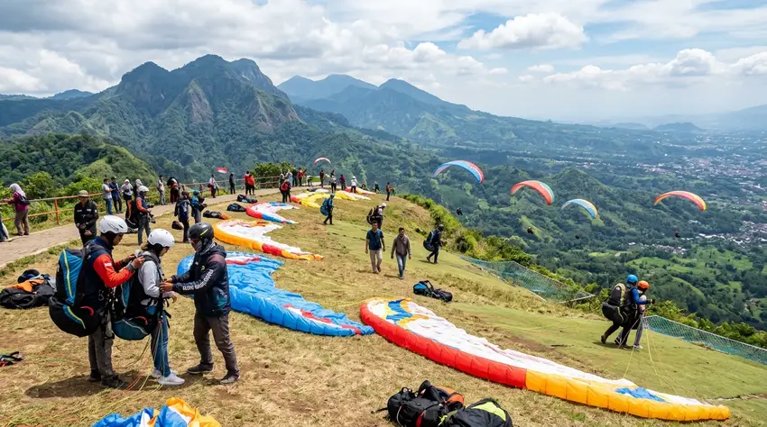

Harga paralayang tandem Gunung Banyak untuk paket reguler tercatat Rp400.000 bagi WNI dan Rp500.000 bagi WNA per Januari 2026, belum termasuk tiket masuk kawasan.
Ringkasan Inti
- Paket reguler: Rp400.000 (WNI) dan Rp500.000 (WNA) menurut laporan Januari 2026.
- Tarif yang sama pernah dilaporkan pada Desember 2024, sehingga harga dasar tampak relatif stabil.
- Paket dengan dokumentasi atau media tertentu lebih mahal, misalnya Rp600.000 untuk WNI pada paket Insta.
- Tiket masuk kawasan dan parkir dibayar terpisah.
- Harga dari operator tur dan blog dapat berbeda, jadi konfirmasi ke pengelola sebelum reservasi.
Berapa Harga Paket Paralayang Tandem di Gunung Banyak?
Paket reguler paralayang tandem di Gunung Banyak tercatat Rp400.000 untuk WNI dan Rp500.000 untuk WNA, sedangkan paket dengan dokumentasi tertambah dapat mencapai Rp600.000 atau lebih.
Pengelola melalui akun Instagram resminya menyebut paket reguler Rp400.000 untuk WNI dan Rp500.000 untuk WNA, dengan tandem sekitar 5 sampai 10 menit. Pada Desember 2024, master tandem Gunung Banyak menyebut tarif Rp400.000 untuk wisatawan lokal dan Rp500.000 untuk mancanegara. Kesamaan angka dalam dua periode menunjukkan tarif dasar relatif stabil.
Pada Mei 2025, paket Insta dilaporkan Rp600.000 untuk WNI dan Rp700.000 untuk WNA. Sebuah blog wisata Januari 2026 menyebut harga paralayang tandem mulai sekitar Rp500.000, dan bisa lebih tinggi bergantung paket foto atau video.
Apa Saja yang Termasuk dalam Paket Reguler Paralayang Tandem?
Paket reguler paralayang tandem umumnya mencakup terbang bersama pemandu, ojek dari titik pendaratan kembali ke lokasi lepas landas, dan dokumentasi sederhana menggunakan ponsel pribadi.
Paket reguler yang dilaporkan mencakup tandem 5 sampai 10 menit, ojek dari titik landing ke take off, dan dokumentasi. Sumber lain menyebut dokumentasi memakai ponsel pribadi pengunjung.
Isi paket dapat berbeda antar operator. Tanyakan hal berikut sebelum membayar:
- Apakah sertifikat terbang diberikan?
- Apakah ada file foto atau video, dan berapa jumlahnya?
- Apakah antar jemput dari hotel termasuk?
- Berapa lama estimasi waktu terbang?
Berapa Biaya Tambahan di Luar Tiket Paralayang Tandem?
Biaya tambahan paralayang tandem di Gunung Banyak meliputi tiket masuk kawasan sekitar Rp20.000 sampai Rp25.000, parkir kendaraan, dan opsional foto, video, atau antar jemput.
Rinciannya berdasarkan laporan yang tersedia:
- Tiket masuk kawasan: Laporan Januari 2026 mencatat Rp20.000 per orang, sedangkan laporan Mei 2025 mencatat Rp25.000 per orang.
- Parkir: Tarif parkir mobil Rp10.000 dan motor Rp5.000 per unit menurut laporan Mei 2025.
- Atraksi lain di kawasan: Sebuah blog Januari 2026 menyebut tiket Omah Kayu dan Taman Langit sekitar Rp35.000.
- Antar jemput hotel: Salah satu operator tur menyebut tambahan Rp50.000 per orang untuk penjemputan di area Malang Raya atau Batu.

Persiapan penerbangan di landasan Gunung Banyak Batu Malang sebelum terbang tandem.
Mengapa Harga Paralayang Tandem Berbeda Antar Sumber?
Harga paralayang tandem berbeda antar sumber karena perbedaan paket, kewarganegaraan, isi dokumentasi, layanan antar jemput, serta waktu pencatatan harga oleh masing-masing pihak.
Operator tur dan agen wisata biasanya menawarkan paket bundel. Contohnya, satu operator mencantumkan paket dasar Rp400.000 hingga paket lengkap Rp800.000 yang mencakup antar jemput, file foto digital, dan suvenir. Operator lain menyebut harga mulai Rp450.000 dengan estimasi terbang sekitar 15 menit.
Karena itu, bandingkan isi paket, bukan hanya angkanya. Harga lebih tinggi belum tentu waktu terbang lebih lama. Sering kali selisihnya terletak pada dokumentasi dan transportasi.
Berapa Total Biaya Paralayang Tandem untuk Dua Orang?
Total biaya paralayang tandem untuk dua orang WNI dengan paket reguler dan mobil pribadi sekitar Rp860.000 berdasarkan tarif 2025, belum termasuk makan dan transportasi menuju lokasi.
Simulasi berdasarkan tarif yang dilaporkan Mei 2025:
- Paket reguler: 2 x Rp400.000 = Rp800.000
- Tiket kawasan: 2 x Rp25.000 = Rp50.000
- Parkir mobil: Rp10.000
- Total perkiraan: Rp860.000
Bila memilih paket Insta Rp600.000 per orang, total menjadi sekitar Rp1.260.000. Angka ini hanya ilustrasi. Tarif dapat berubah, terutama pada musim liburan.
Siapa yang Boleh Terbang dan Apa Persyaratannya?
Paralayang tandem umumnya terbuka bagi pemula, tetapi peserta biasanya harus sehat, tanpa riwayat penyakit jantung atau gangguan pernapasan serius, dan mengikuti arahan pemandu.
Persyaratan detail seperti batas usia dan berat badan dapat bervariasi, jadi tanyakan langsung kepada pengelola. Informasi ini bersifat umum dan tidak menggantikan nasihat medis. Pengunjung dengan kondisi kesehatan tertentu, ibu hamil, atau yang memiliki keluhan punggung dan sendi sebaiknya berkonsultasi dengan dokter sebelum terbang.
Penerbangan juga bergantung pada angin dan cuaca. Pemandu berhak menunda atau membatalkan penerbangan bila kondisi dianggap tidak layak.
Bagaimana Jam Operasional dan Cara Reservasi Paralayang Gunung Banyak?
Paralayang Gunung Banyak beroperasi setiap hari kecuali Jumat pagi, dan pengunjung dapat reservasi terlebih dahulu atau datang langsung ke lokasi.
Menurut laporan Januari 2026, jam operasional Senin sampai Kamis pukul 08.00 sampai 17.00 WIB, Jumat pukul 13.00 sampai 17.00 WIB, dan akhir pekan pukul 07.30 sampai 17.00 WIB. Reservasi disarankan pada akhir pekan dan libur panjang agar tidak menunggu lama.
Lokasinya berada di Kecamatan Bumiaji, Kota Batu, dan berjarak sekitar 15 menit berkendara dari Alun-Alun Kota Batu.
Bagaimana Tips Menghemat Biaya Paralayang Tandem?
Untuk menghemat biaya paralayang tandem, pilih paket reguler, pesan langsung ke pengelola, bandingkan isi paket, dan hindari tambahan yang tidak dibutuhkan.
Beberapa langkah praktis:
- Tentukan apakah dokumentasi profesional benar-benar dibutuhkan atau cukup memakai ponsel sendiri.
- Datang di hari kerja bila jadwal fleksibel, karena antrean biasanya lebih pendek.
- Bawa kendaraan sendiri bila rombongan, agar tidak membayar antar jemput per orang.
- Konfirmasi harga total tertulis sebelum membayar.
FAQ
Paket reguler di Gunung Banyak tercatat Rp400.000 untuk WNI per Januari 2026, belum termasuk tiket masuk kawasan dan parkir. Paket dengan dokumentasi tambahan dapat lebih mahal.
Belum. Laporan media menyebut tiket masuk kawasan dibayar terpisah, sekitar Rp20.000 sampai Rp25.000 per orang, ditambah parkir kendaraan.
Paket reguler dilaporkan sekitar 5 sampai 10 menit. Operator tur tertentu menyebut estimasi lebih lama, sehingga durasi sebaiknya dikonfirmasi bersama pemandu sebelum membayar.